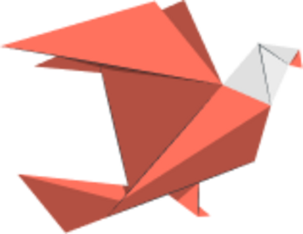

Back to projects
Flappy Origami
An endless-runner game in Unity, inspired by Flappy Bird: a kid throws a paper origami into the school hallway, and the player steers it past the obstacles.
- Type
- 2D endless-runner game
- My role
- Unity development, visual design and gameplay
- Tools
- Unity, C#, GitHub Pages
- Context
- Degree course, HIT

The challenge
The brief was to build a game based on a well-known one. We took Flappy Bird and gave it our own story and mechanics: a kid throws an origami down the school hallway, and the player has to guide it past school-themed "obstacles".
This isn't a learning game. It's here to show development skills, game design and command of Unity and C#, the same skills I use to build learning games.
What's in the game
- Character choice: three origami types (plane, boat, bird). Each changes the look and the collider.
- Physics: gravity, with an upward push on Space.
- Dynamic spawning of obstacles, backgrounds and bonuses (an A+ grade).
- Game states: start, throw animation, win or lose, high score and restart.
- Sound and UI: HUD, mute, and fireworks on a new high score.
Game flow

